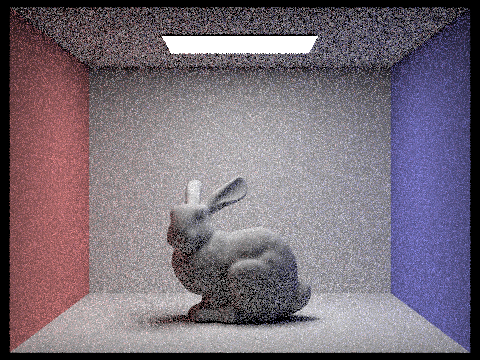

CS 184: Computer Graphics and Imaging, Spring 2023
Project 3-1: Path Tracer
Julia Nicholson
Overview
This project is about rendering images of 3D scenes with realistic color and shading. Part 1 implements methods for generating rays, which represent lines of light that can bounce off of and intersect with objects in a scene. A pixel will appear lighter if more rays have come from a light source, potentially bouncing off of some surfaces, and ended up at the location for that pixel. Primatives such as triangles and spheres have their own intersection methods, which test for if a ray intersects that object. Part 2 implements Bounding Volume Heirarchy, which is a way to speed up rendering by representing objects as a binary tree, where objects that are physically closer in space are generally closer together in the tree data structure. Bounding Volume Heirarchy narrows down the number of objects that need to do an intersection test for a given ray, and is implemented in such a way that if a ray doesn't come close to a set of objects, those objects won't perform an intersection test.
Up until part 3, surfaces are given colors depending on their normal vectors. Part 3 implements direct lighting, rendering images based on their BDSFs (Bi-directional scattering functions). After part 3, images have more realistic color and shadows. Part 4 builds indirect lighting on top of this, with functions that measure light rays that bounce multiple times before reaching the camera. This results in softer shadows and lighter, more realistic, global illumination, which is how light travels in real life. Part 5 implements adaptive sampling, which focuses ray samples on more 'tricky' areas of a scene, like very textured and wrinkly surfaces, or surfaces that are in partial shadow.
Part 1: Ray Generation and Scene Intersection (20 Points)
Walk through the ray generation and primitive intersection parts of the rendering pipeline.
Camera::generate_ray() takes an (x,y) position in image space and creates a ray in world space that points from the camera out into the scene. Part of this implementation involves adding an extra dimension to the coordinates: the z-coordinate represents the direction pointing away from the camera, to the horizon. PathTracer::raytrace_pixel() takes the coordinates of a pixel and traces multiple rays into the scene. Those rays go on to hit objects in the scene, and the average radiance of the objects each of those rays hit is stored in the pixel value to be rendered.
Explain the triangle intersection algorithm you implemented in your own words.
To test if a ray intersects a triangle, we use the Moller-Trumbole algorithm. We use barycentric coordinates to tell whether the ray evaluated at the t value given by the algorithm lies within the triangle. In the equation below, alpha is (1 - b1 - b2), beta is b1, and gamma is b3. If alpha + beta + gamma is less than 1 and greater than 0, then we have an intersection with the triangle. This intersection has normal vector that is a weighted sum of the normals at the triangle's vertices, where the weights are alpha, beta, and gamma.
Show images with normal shading for a few small .dae files.
|
dae/sky/CBgems.dae
|
dae/meshedit/teapot.dae
|
Part 2: Bounding Volume Hierarchy (20 Points)
Walk through your BVH construction algorithm. Explain the heuristic you chose for picking the splitting point.
To construct a Bounding Volume Heirarchy given a list of primitive objects, BVH::construct_bvh(...) first fills one big bounding box with all the primatives. If the number of primitives is less than max_leaf_size, return the given bounding box - it is a leaf. If we have more than max_leaf_size elements, the function must split up the primitives into two halfs. It takes the average x-, y-, and z- coordinates over all the primitives. construct_bvh(...) chooses the axis (x, y, or z) which most evenly separates the primitives, where the split point is the average coordinate along that axis. The function splits the objects into two lists, depending on their position along the chosen splitting axis, and recursively creates a bvh for both lists of primitives.
Show images with normal shading for a few large .dae files that you can only render with BVH acceleration.
Compare rendering times on a few scenes with moderately complex geometries with and without BVH acceleration. Present your results in a one-paragraph analysis.
Rendering is much faster with bounding volume heirarchy, because if a ray doesn't come anywhere near a triangle, it won't go through the lengthy and computationally taxing process of intersection-testing. The below cow took 49.4437 seconds to render on my local computer without bvh, and only 0.8845 sec to render with bounding volume heirarchy enabled. The has_intersection and intersect methods of BVH are what make this speedup possible. Given a ray, these methods will short circuit if the ray doesn't intersect the bounding box at any point.
Part 3: Direct Illumination (20 Points)
Walk through both implementations of the direct lighting function.
There are two ways of calculating direct lighting in a scene: hemisphere and importance sampling. With hemisphere sampling, at each given point, pathtracer::estimate_direct_lighting_hemisphere(...) samples from a hemisphere of directions to be the incoming ray of light at that point. For each sample ray, the origin is offset by a small value (EPS_F) in the direction of the incoming vector, to avoid detecting an intersection with the object itself. If the sample ray intersects the light source, we add (fr * L_i * cos)/(1.f/(2*PI)) to the running sum of radiance for that point, where fr is the bsdf at the point, L_i is the light's emission, and cos is cosine of the angle created by the incoming ray.
The second way of calculating direct lighting is importance sampling, which only samples rays that are pointed towards light sources, rather than from a hemisphere of options. pathtracer::estimate_direct_lighting_importance(...) iterates through each light source, using the light's sample_l(...) method to sample an incoming ray direction. If the light is a point light, it only takes one sample. If the light is an area light, we take ns_area_light number of samples. For each sample, an incoming ray is created going from the object to the light source, in a simelar way to hemisphere sampling. Unlike hempisphere sampling, the ray's max_t value is set to distToLight - EPS_F, because we don't care about intersections that happen behind the light. If there's no intersection between the hit point and the light source, that means there are no objects blocking the point. In this case, we add (fr * L_i * cos)/(pdf) to the running total of direct lighting, where this time L_i and pdf are given by bsdf::sample_L(...). In both hempisphere and importance sampling, we normalize by the number of samples per light.
Show some images rendered with both implementations of the direct lighting function.
|
Uniform Hemisphere Sampling
|
Light Sampling
|
|
CBbunny.dae
|
CBbunny.dae
|
Focus on one particular scene with at least one area light and compare the noise levels in soft shadows when rendering with 1, 4, 16, and 64 light rays (the -l flag) and with 1 sample per pixel (the -s flag) using light sampling, not uniform hemisphere sampling.
|
1 Light Ray (CBbunny.dae)
|
4 Light Rays (CBbunny.dae)
|
|
16 Light Rays (CBbunny.dae)
|
64 Light Rays (CBbunny.dae)
|
More light rays leads to less black spots (noise) in the image. With more light rays, it is more likely that some of them will hit the light, so the value of each pixel will more accurately represent the lighting in the image.
Compare the results between uniform hemisphere sampling and lighting sampling in a one-paragraph analysis.
Uniform hemisphere sampling creates a more grainy image, whereas importance sampling generates a more smooth image with fewer black spots. This is because hemisphere sampling sends rays in all directions (in a hemisphere). Some of these rays will not be pointed at the light, even if that point would be illuminated in real life. This is remedied in importance sampling because the rays are designed to point towards the light. Hemisphere sampling is more close to what reality is like, because in the real world a point doesn't "know" where the lights are positioned; each point has light/absence of light coming at it from all directions. But in a simulated situation like this, where we know the locations of all the lights, we know that all direct lighting must come from those lights, so we can sample in the directions of the given lights.
Part 4: Global Illumination (20 Points)
Walk through your implementation of the indirect lighting function.
Indirect lighting is implemented in pathtracer::at_least_one_bounce_radiance(...). This function generates an outgoing ray with probability 0.35, and otherwise returns only the direct lighting for the input ray. If an outgoing ray is generated, we test for an intersection between that outgoing ray and the scene. If there's an intersection, we recursively call at_least_one_bounce_radiance(...) on that ray to generate the indirect radiance for that point, and calculate indirect_lighting = (at_least_one_bounce_radiance(next_r, next_isctn) * f * cos) /(pdf * 0.35), where f and pdf are given by sample_f(...), and cos is defined simelar to above parts. Note that we also divide by 0.35, which is the probability of continuing to generate new rays. This is because we must normalize by the 'continuation' probability: the more likely it is for a ray to bounce for a long time, the more total lighting we will get for one pixel, so we must normalize by the coninuation probability to avoid an overly bright image.
Show some images rendered with global (direct and indirect) illumination. Use 1024 samples per pixel.
Pick one scene and compare rendered views first with only direct illumination, then only indirect illumination. Use 1024 samples per pixel. (You will have to edit PathTracer::at_least_one_bounce_radiance(...) in your code to generate these views.)
|
Only direct illumination (CBbunny.dae)
|
Only indirect illumination (CBbunny.dae)
|
In only direct illumination, The shadows are very dark, and anywhere that is not in direct line of sight with the light is black. Indirect illumination creates softer, lighter shadows, because it allows the light to bounce more. Notice that within indirect illumination, the light source is black. This is because light at the light source is zero-bounce light, which is direct illumination.
For CBbunny.dae, compare rendered views with max_ray_depth set to 0, 1, 2, 3, and 100 (the -m flag). Use 1024 samples per pixel.
|
max_ray_depth = 0 (CBbunny.dae)
|
max_ray_depth = 1 (CBbunny.dae)
|
|
max_ray_depth = 2 (CBbunny.dae)
|
max_ray_depth = 3 (CBbunny.dae)
|
|
max_ray_depth = 100 (CBbunny.dae)
|
With max_ray_depth at zero and 1, there is no indirect lighting, so this looks the same as if indirect lighting weren't implemented. Once the max_ray_depth is 2 or greater, it allows for the light to bounce a little, and the shadows are lighter and the scene appears more realistic. It doesn't take many bounces for the images to converge: max_ray_depth = 100 isn't that different from max_ray_depth = 3.
Pick one scene and compare rendered views with various sample-per-pixel rates, including at least 1, 2, 4, 8, 16, 64, and 1024. Use 4 light rays.
|
1 sample per pixel (example1.dae)
|
2 samples per pixel (example1.dae)
|
|
4 samples per pixel (example1.dae)
|

8 samples per pixel (example1.dae)
|
|
16 samples per pixel (example1.dae)
|
64 samples per pixel (example1.dae)
|
|
1024 samples per pixel (example1.dae)
|
The more samples per pixel, the less graininess and noise there is in an image. One thing that I think may be a bug in my implementation is the graininess sometimes results in light spots rather than dark spots. Despite this potential bug, the convergent image (with 1024 samples per pixel) looks close to real life.
Part 5: Adaptive Sampling (20 Points)
Explain adaptive sampling. Walk through your implementation of the adaptive sampling.
Some areas of an image might not need as many samples as others. A very smooth surface that is unobstructed from light might only need a few sample rays to produce an accurate pixel value, while a complex/rough surface that is partially shadowed would need lots of sample rays to get the level of detail in such a surface right. Adaptive sampling focuses on the 'tougher' areas in a scene to sample many times, while leaving the 'easier' areas only a few samples.
Adaptive sampling is implemented in pathtracer::raytrace_pixel(...). Every samplesperBatch samples, there is a check for convergence. If I (defined below) is less than maxTolerence * mu, then the value for the given pixel has converged, and we can stop getting samples for that pixel. Otherwise, the function continues generating samples until num_samples samples have been taken. In the equation for I, mu is the mean illuminance for the samples so far, and sigma is the standard deviation.
Pick two scenes and render them with at least 2048 samples per pixel. Show a good sampling rate image with clearly visible differences in sampling rate over various regions and pixels. Include both your sample rate image, which shows your how your adaptive sampling changes depending on which part of the image you are rendering, and your noise-free rendered result. Use 1 sample per light and at least 5 for max ray depth.
 Rendered image (banana.dae)
Rendered image (banana.dae)
|
Sample rate image (banana.dae)
|
|
Rendered image (CBbunny.dae)
|
Sample rate image (CBbunny.dae)
|